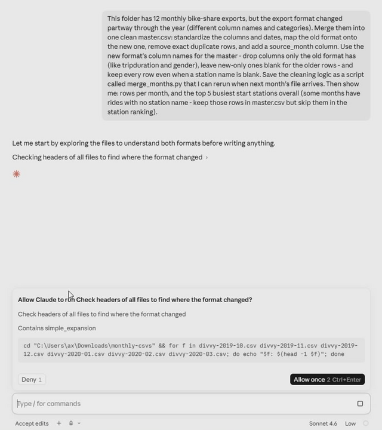
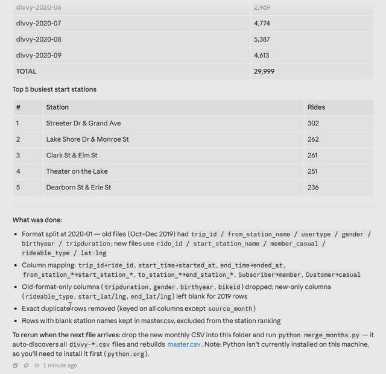

Demo 3 · Code
Kill a recurring data chore
In 10 minutesTwelve monthly data exports — where the format changed mid-year — merged into one clean master file. Plus the part that matters: a script that does next month for free.
First time in Code? It asks you to install Git for Windows once — click the "Download Git" button, run the installer accepting every default, then restart Claude. No Code tab at all? See the checks on the start page. And the bottom-left should say University of Chicago Enterprise — yes, at TTIC; if not, do Sign in once first.
The data is real: trips from Divvy, Chicago's bike-share, split here into twelve monthly files. In January 2020 Divvy changed its data format — different column names, different categories. If you've ever merged a year of experiment logs after someone renamed the columns mid-project, you already know this file set — it's the chore that quietly eats an afternoon.
Download the 12 monthly files (ZIP, 1.2 MB)
Steps
- Download the ZIP, then right-click → Extract All… → Extract — accept the suggested location. You'll get a
monthly-csvsfolder with 12 CSVs. - In Claude Desktop, switch to the Code tab and start a new session. When it asks which folder to work in, choose Downloads → monthly-csvs.
-
Paste this and hit Enter:
This folder has 12 monthly bike-share exports, but the export format changed partway through the year (different column names and categories). Merge them into one clean master.csv: standardize the columns and dates, map the old format onto the new one, remove exact duplicate rows, and add a source_month column. Use the new format's column names for the master — drop columns only the old format has (like tripduration and gender), leave new-only ones blank for the older rows — and keep every row even when a station name is blank. Save the cleaning logic as a script called merge_months.py that I can rerun when next month's file arrives. Then show me: rows per month, and the top 5 busiest start stations overall (some months have rides with no station name — keep those rows in master.csv but skip them in the station ranking).Claude Code reads the actual files, pinpoints exactly where the format flips, works out how the old columns map onto the new ones, and runs the merge — all in front of you. Along the way it will ask permission before reading the folder or running a step; approving is the normal flow — you're watching it work, not breaking anything.

Code explores the files first, then asks permission before each step — approving is the normal flow.
-
When it finishes, open the
monthly-csvsfolder in File Explorer. Double-clickmaster.csv— it opens in Excel: about 30,000 rows, one consistent set of columns,source_monthon every row. Next to it ismerge_months.py— the script is the real artifact. Keep the folder open; you'll need it in a second.
Success looks like this: rows per month, the top stations — and a plain-English log of every cleaning decision.
Your exact wording will differ from the screenshot — that's normal. Success looks like: a master.csv of about 30,000 rows, a merge_months.py script in the folder, and a count for all 12 months.
Don't take the first answer — push back
Read the summary it printed. The monthly counts should rise and fall like real ridership — a Chicago winter trough, a summer peak, a sharp dip in spring 2020. If a number looks wrong, say so:
April 2020 looks way too low next to the other months. Is that real, or did the merge drop rows? Show me the row count straight from the April file.
It'll check the source and either confirm the dip is real (it is — the city shut down) or find its own bug. Trusting a number because you checked it is the sanity check you'd run on any pipeline — and the difference between using AI and being used by it.
The kicker
"Next month" just arrived:
It lands in your Downloads folder like everything else. Drag divvy-2020-10.csv into your monthly-csvs folder — the one with the other 12 — so it sits next to them. Then tell Claude Code:
October's file just arrived (divvy-2020-10.csv). Rerun merge_months.py to include it and give me the updated monthly counts.
Seconds. That's the difference between doing the chore and owning the recipe. From now on, next month is just this one line to Claude — or run merge_months.py yourself from any Python environment; the thinking is done, and the recipe is yours to version-control.
Yes, this is allowed — it's the University of Chicago enterprise workspace. For regulated data, check UChicago's AI guidance first.
Your turn
What do you rebuild by hand every month — experiment logs, benchmark sweeps, survey exports, instrument dumps, grant budget roll-ups? That's your first real project. Point Code at last month's files and ask it to build the merge and the script.
That's your first Automate — and where researchers go deepest. Two guides worth your time:
- Getting Started with Claude Code — Yale economist Paul Goldsmith-Pinkham's researcher on-ramp.
- claudeblattman.com — UChicago Harris professor Chris Blattman's complete AI-workflow site. His resources page is the map of the whole territory.
Trip data: Divvy system data, City of Chicago's bike share — provided under the Divvy Data License Agreement and included here as sampled demo material for this tutorial (~10% per month, proportional to actual ridership).